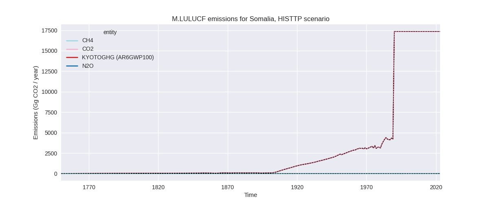
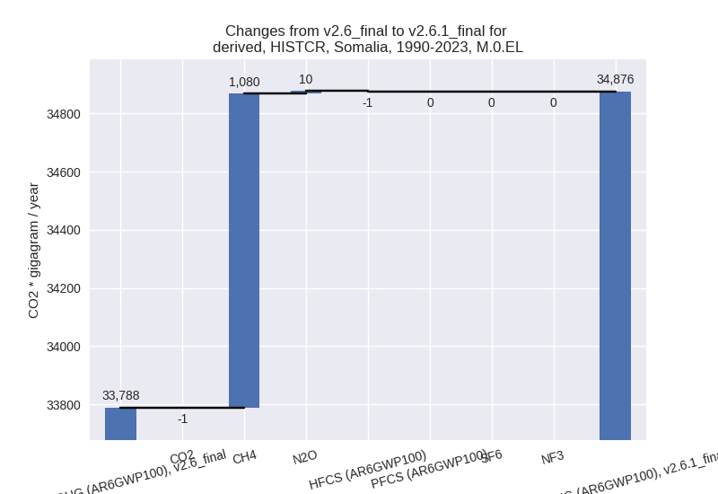

Changes in PRIMAP-hist v2.6.1_final compared to v2.6_final for Somalia
2025-03-19
Johannes Gütschow
Change analysis for Somalia for PRIMAP-hist v2.6.1_final compared to v2.6_final
Overview over emissions by sector and gas
The following figures show the aggregate national total emissions excluding LULUCF AR6GWP100 for the country reported priority scenario. The dotted linesshow the v2.6_final data.
The following figures show the aggregate national total emissions excluding LULUCF AR6GWP100 for the third party priority scenario. The dotted linesshow the v2.6_final data.


Overview over changes
In the country reported priority scenario we have the following changes for aggregate Kyoto GHG and national total emissions excluding LULUCF (M.0.EL):
- Emissions in 2023 have changed by 1.3%% (504.43 Gg CO2 / year)
- Emissions in 1990-2023 have changed by 3.2%% (1088.01 Gg CO2 / year)
In the third party priority scenario we have the following changes for aggregate Kyoto GHG and national total emissions excluding LULUCF (M.0.EL):
- Emissions in 2023 have changed by -1.7%% (-605.97 Gg CO2 / year)
- Emissions in 1990-2023 have changed by 1.5%% (437.70 Gg CO2 / year)
Most important changes per scenario and time frame
In the country reported priority scenario the following sector-gas combinations have the highest absolute impact on national total KyotoGHG (AR6GWP100) emissions in 2023 (top 5):
- 1: 1.B.1, CH4 with 1785.31 Gg CO2 / year (109.7%)
- 2: 1.A, CH4 with -952.45 Gg CO2 / year (-38.0%)
- 3: 3.A, CH4 with -123.25 Gg CO2 / year (-0.5%)
- 4: 1.A, N2O with -114.64 Gg CO2 / year (-35.1%)
- 5: M.AG.ELV, N2O with -62.41 Gg CO2 / year (-1.8%)
In the country reported priority scenario the following sector-gas combinations have the highest absolute impact on national total KyotoGHG (AR6GWP100) emissions in 1990-2023 (top 5):
- 1: 1.B.1, CH4 with 1292.74 Gg CO2 / year (131.3%)
- 2: 1.A, CH4 with -221.30 Gg CO2 / year (-14.3%)
- 3: 1.A, N2O with -24.50 Gg CO2 / year (-12.1%)
- 4: 5, N2O with 20.42 Gg CO2 / year (14.9%)
- 5: 1.B.1, N2O with 17.14 Gg CO2 / year (131.3%)
In the third party priority scenario the following sector-gas combinations have the highest absolute impact on national total KyotoGHG (AR6GWP100) emissions in 2023 (top 5):
- 1: 1.B.1, CH4 with 1785.31 Gg CO2 / year (109.7%)
- 2: 4, CH4 with -1135.29 Gg CO2 / year (-31.5%)
- 3: 1.A, CH4 with -952.45 Gg CO2 / year (-38.0%)
- 4: 1.A, N2O with -114.64 Gg CO2 / year (-35.1%)
- 5: M.AG.ELV, N2O with -98.43 Gg CO2 / year (-1.8%)
In the third party priority scenario the following sector-gas combinations have the highest absolute impact on national total KyotoGHG (AR6GWP100) emissions in 1990-2023 (top 5):
- 1: 1.B.1, CH4 with 1292.74 Gg CO2 / year (131.3%)
- 2: 4, CH4 with -643.00 Gg CO2 / year (-29.1%)
- 3: 1.A, CH4 with -221.30 Gg CO2 / year (-14.3%)
- 4: 1.A, N2O with -24.50 Gg CO2 / year (-12.1%)
- 5: 5, N2O with 20.42 Gg CO2 / year (14.9%)
Notes on data changes
Here we list notes explaining important emissions changes for the country.
- No new country reported data has been included. Changes in total emissions are relatively small because changes for individual sectors cancel. Country reported data covers only 2000, 2005, 2010, and 2015 thus the third party data has a high influence on the CR time-series. Some sectors, e.g. 1.A for non-CO2, 1.B.1 for CH4 are not covered by country reported data at all.
- The changes in the CR time-series come from EDGAR (mostly used directly because of a lack of country reported data) and FAO data (used to extrapolate country reported data).
- In the TP scenario the changes are for similar sectors with the addition of a high reduction of waste CH4 emissions from EDGAR data.
Changes by sector and gas
For each scenario and time frame the changes are displayed for all individual sectors and all individual gases. In the sector plot we use aggregate Kyoto GHGs in AR6GWP100. In the gas plot we usenational total emissions without LULUCF.
country reported scenario
2023
1990-2023

third party scenario
2023
1990-2023
Detailed changes for the scenarios:
country reported scenario (HISTCR):
Most important changes per time frame
For 2023 the following sector-gas combinations have the highest absolute impact on national total KyotoGHG (AR6GWP100) emissions in 2023 (top 5):
- 1: 1.B.1, CH4 with 1785.31 Gg CO2 / year (109.7%)
- 2: 1.A, CH4 with -952.45 Gg CO2 / year (-38.0%)
- 3: 3.A, CH4 with -123.25 Gg CO2 / year (-0.5%)
- 4: 1.A, N2O with -114.64 Gg CO2 / year (-35.1%)
- 5: M.AG.ELV, N2O with -62.41 Gg CO2 / year (-1.8%)
For 1990-2023 the following sector-gas combinations have the highest absolute impact on national total KyotoGHG (AR6GWP100) emissions in 1990-2023 (top 5):
- 1: 1.B.1, CH4 with 1292.74 Gg CO2 / year (131.3%)
- 2: 1.A, CH4 with -221.30 Gg CO2 / year (-14.3%)
- 3: 1.A, N2O with -24.50 Gg CO2 / year (-12.1%)
- 4: 5, N2O with 20.42 Gg CO2 / year (14.9%)
- 5: 1.B.1, N2O with 17.14 Gg CO2 / year (131.3%)
Changes in the main sectors for aggregate KyotoGHG (AR6GWP100) are
- 1: Total sectoral emissions in 2022 are 7416.64 Gg
CO2 / year which is 19.2% of M.0.EL emissions. 2023 Emissions have
changed by 11.0% (741.88 Gg CO2 /
year). 1990-2023 Emissions have changed by 24.5% (1064.00 Gg CO2 / year). For 2023
the changes per gas
are:
For 1990-2023 the changes per gas are:
The changes come from the following subsectors:- 1.A: Total sectoral emissions in 2022 are 3959.19
Gg CO2 / year which is 53.4% of category 1 emissions. 2023 Emissions
have changed by -21.0% (-1067.09 Gg
CO2 / year). 1990-2023 Emissions have changed by -7.4% (-245.81 Gg CO2 / year). For 2023
the changes per gas
are:
For 1990-2023 the changes per gas are:
There is no subsector information available in PRIMAP-hist. - 1.B.1: Total sectoral emissions in 2022 are 3457.45
Gg CO2 / year which is 46.6% of category 1 emissions. 2023 Emissions
have changed by 109.7% (1808.98 Gg
CO2 / year). 1990-2023 Emissions have changed by 131.3% (1309.88 Gg CO2 / year). For 2023
the changes per gas
are:
For 1990-2023 the changes per gas are:
There is no subsector information available in PRIMAP-hist. - 1.B.2: Total sectoral emissions in 2022 are 0.00 Gg
CO2 / year which is 0.0% of category 1 emissions. 2023 Emissions have
changed by -100.0% (-0.00 Gg CO2 /
year). 1990-2023 Emissions have changed by -23.7% (-0.07 Gg CO2 / year). For 2023 the
changes per gas
are:
For 1990-2023 the changes per gas are:
There is no subsector information available in PRIMAP-hist.
- 1.A: Total sectoral emissions in 2022 are 3959.19
Gg CO2 / year which is 53.4% of category 1 emissions. 2023 Emissions
have changed by -21.0% (-1067.09 Gg
CO2 / year). 1990-2023 Emissions have changed by -7.4% (-245.81 Gg CO2 / year). For 2023
the changes per gas
are:
- 2: Total sectoral emissions in 2022 are 1882.44 Gg CO2 / year which is 4.9% of M.0.EL emissions. 2023 Emissions have changed by -1.1% (-22.79 Gg CO2 / year). 1990-2023 Emissions have changed by -0.3% (-1.83 Gg CO2 / year).
- M.AG: Total sectoral emissions in 2022 are 27499.38 Gg CO2 / year which is 71.2% of M.0.EL emissions. 2023 Emissions have changed by -0.7% (-189.94 Gg CO2 / year). 1990-2023 Emissions have changed by -0.0% (-1.98 Gg CO2 / year).
- 4: Total sectoral emissions in 2022 are 1610.05 Gg CO2 / year which is 4.2% of M.0.EL emissions. 2023 Emissions have changed by -0.7% (-11.68 Gg CO2 / year). 1990-2023 Emissions have changed by 0.8% (7.40 Gg CO2 / year).
- 5: Total sectoral emissions in 2022 are 203.14 Gg
CO2 / year which is 0.5% of M.0.EL emissions. 2023 Emissions have
changed by -6.0% (-13.04 Gg CO2 /
year). 1990-2023 Emissions have changed by 14.9% (20.42 Gg CO2 / year). For 2023 the
changes per gas
are:
For 1990-2023 the changes per gas are:
third party scenario (HISTTP):
Most important changes per time frame
For 2023 the following sector-gas combinations have the highest absolute impact on national total KyotoGHG (AR6GWP100) emissions in 2023 (top 5):
- 1: 1.B.1, CH4 with 1785.31 Gg CO2 / year (109.7%)
- 2: 4, CH4 with -1135.29 Gg CO2 / year (-31.5%)
- 3: 1.A, CH4 with -952.45 Gg CO2 / year (-38.0%)
- 4: 1.A, N2O with -114.64 Gg CO2 / year (-35.1%)
- 5: M.AG.ELV, N2O with -98.43 Gg CO2 / year (-1.8%)
For 1990-2023 the following sector-gas combinations have the highest absolute impact on national total KyotoGHG (AR6GWP100) emissions in 1990-2023 (top 5):
- 1: 1.B.1, CH4 with 1292.74 Gg CO2 / year (131.3%)
- 2: 4, CH4 with -643.00 Gg CO2 / year (-29.1%)
- 3: 1.A, CH4 with -221.30 Gg CO2 / year (-14.3%)
- 4: 1.A, N2O with -24.50 Gg CO2 / year (-12.1%)
- 5: 5, N2O with 20.42 Gg CO2 / year (14.9%)
Changes in the main sectors for aggregate KyotoGHG (AR6GWP100) are
- 1: Total sectoral emissions in 2022 are 5847.41 Gg
CO2 / year which is 17.2% of M.0.EL emissions. 2023 Emissions have
changed by 14.5% (741.88 Gg CO2 /
year). 1990-2023 Emissions have changed by 31.8% (1064.00 Gg CO2 / year). For 2023
the changes per gas
are:
For 1990-2023 the changes per gas are:
The changes come from the following subsectors:- 1.A: Total sectoral emissions in 2022 are 2389.96
Gg CO2 / year which is 40.9% of category 1 emissions. 2023 Emissions
have changed by -30.7% (-1067.09 Gg
CO2 / year). 1990-2023 Emissions have changed by -10.5% (-245.81 Gg CO2 / year). For 2023
the changes per gas
are:
For 1990-2023 the changes per gas are:
There is no subsector information available in PRIMAP-hist. - 1.B.1: Total sectoral emissions in 2022 are 3457.45
Gg CO2 / year which is 59.1% of category 1 emissions. 2023 Emissions
have changed by 109.7% (1808.98 Gg
CO2 / year). 1990-2023 Emissions have changed by 131.3% (1309.88 Gg CO2 / year). For 2023
the changes per gas
are:
For 1990-2023 the changes per gas are:
There is no subsector information available in PRIMAP-hist. - 1.B.2: Total sectoral emissions in 2022 are 0.00 Gg
CO2 / year which is 0.0% of category 1 emissions. 2023 Emissions have
changed by -100.0% (-0.00 Gg CO2 /
year). 1990-2023 Emissions have changed by -23.7% (-0.07 Gg CO2 / year). For 2023 the
changes per gas
are:
For 1990-2023 the changes per gas are:
There is no subsector information available in PRIMAP-hist.
- 1.A: Total sectoral emissions in 2022 are 2389.96
Gg CO2 / year which is 40.9% of category 1 emissions. 2023 Emissions
have changed by -30.7% (-1067.09 Gg
CO2 / year). 1990-2023 Emissions have changed by -10.5% (-245.81 Gg CO2 / year). For 2023
the changes per gas
are:
- 2: Total sectoral emissions in 2022 are 1882.44 Gg CO2 / year which is 5.6% of M.0.EL emissions. 2023 Emissions have changed by -1.1% (-22.79 Gg CO2 / year). 1990-2023 Emissions have changed by -0.3% (-1.83 Gg CO2 / year).
- M.AG: Total sectoral emissions in 2022 are 23410.98 Gg CO2 / year which is 69.0% of M.0.EL emissions. 2023 Emissions have changed by -0.8% (-192.38 Gg CO2 / year). 1990-2023 Emissions have changed by -0.0% (-4.31 Gg CO2 / year).
- 4: Total sectoral emissions in 2022 are 2571.36 Gg
CO2 / year which is 7.6% of M.0.EL emissions. 2023 Emissions have
changed by -29.7% (-1119.64 Gg CO2 /
year). 1990-2023 Emissions have changed by -27.8% (-640.59 Gg CO2 / year). For 2023
the changes per gas
are:
For 1990-2023 the changes per gas are: - 5: Total sectoral emissions in 2022 are 203.14 Gg
CO2 / year which is 0.6% of M.0.EL emissions. 2023 Emissions have
changed by -6.0% (-13.04 Gg CO2 /
year). 1990-2023 Emissions have changed by 14.9% (20.42 Gg CO2 / year). For 2023 the
changes per gas
are:
For 1990-2023 the changes per gas are: